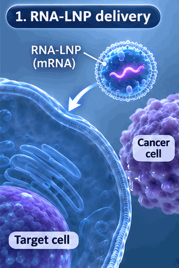
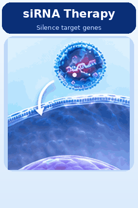
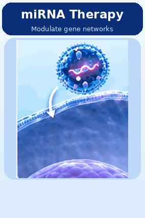
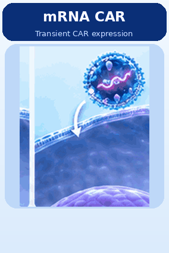
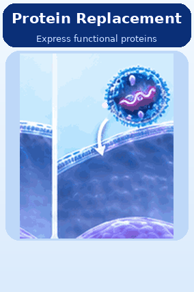
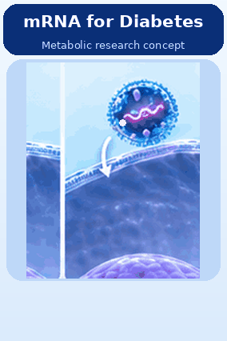
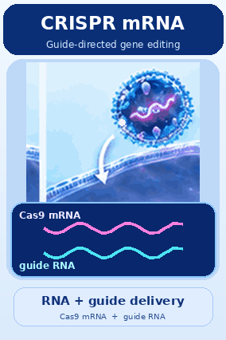
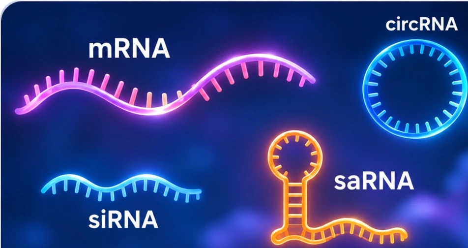

NGS, gene expression, mutation profiling, and biomarker research.
RNA × Molecular Design × Drug Development
Integrated RNA and
Molecular Solutions
Design · Develop · Validate · Translate
Research tools and scientific services for RNA therapeutics, vaccine development, molecular engineering, and translational research.







Our Services
Scientific capabilities spanning molecular analysis, RNA design, and translational development.

mRNA, saRNA, siRNA, miRNA and circRNA research with UTR, codon and poly(A) design.
Computational target research, molecular analysis and lead-assessment planning.
LNP formulation planning, research evaluation and translational support.
Applications
Research applications across RNA technologies and translational science.